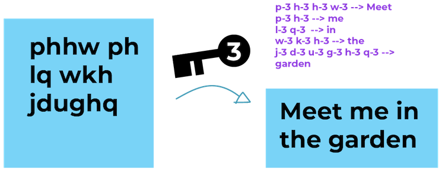
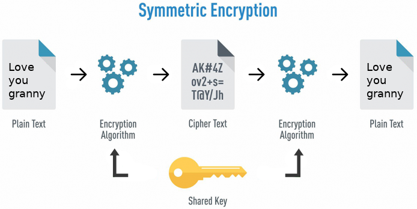
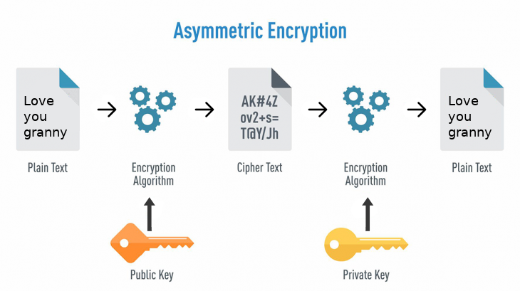
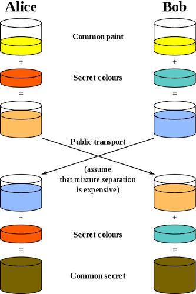
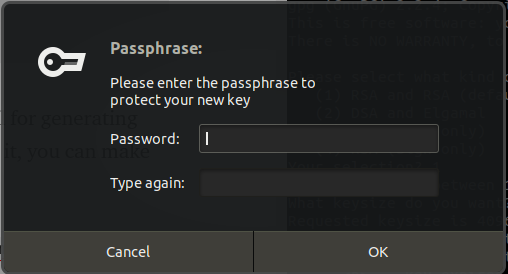
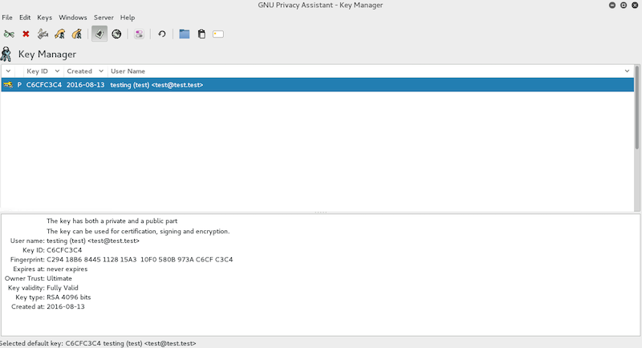
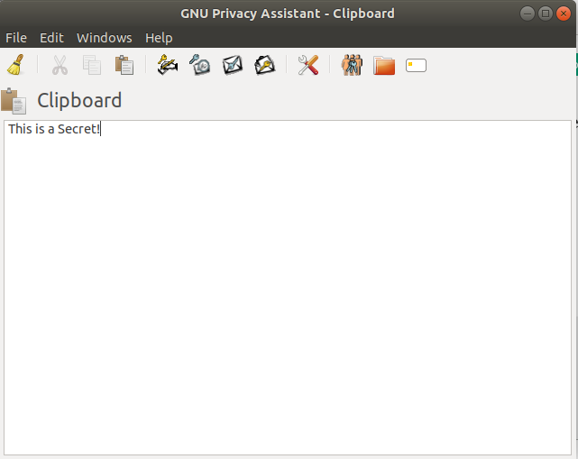

In mid-February 2020, WhatsApp announced on its blog that the messaging app is now being actively used by more than 2 billion people worldwide. Multiply that by the number of messages being sent by each user – that’s a lot of texts, photos, videos, voice messages, documents, status updates, and calls being sent through the public web each day!
Imagine your data getting into the wrong hands for everyone to see with no privacy or security. What kind of harm could that cause? Fortunately, there is end-to-end encryption (E2EE) — “a public key encryption system that ensures the contents of your messages, text, and even files from being understood by anyone except their intended recipients”
Until recently, end-to-end encryption provided necessary security to prevent your information from being read in transit — that is, not hackers, not the government, and not even the company that facilitates your communication could read your messages. Disconcertingly, this is under threat under the EARN IT legislation bill which aims to uproot encryption systems.
In this article, I will dive into how E2EE works and why it is important that we keep it. Before we begin going over end-to-end encryption, let’s take some time going over the basics of encryption.
Passing a secret message
Let’s say you are in a classroom and want to send a secret message to your friend Bob, but you need to pass it through your friends beforehand. In this example, you and the intermediaries are called network nodes which are either a redistribution point or a communication endpoint.
Image source: ssd.eff.org
As you might have guessed, you are very concerned that your friends may take a peek at your secret message. So, you encrypt the message using the classic Caesar/shift cipher — “a cipher in which each letter in the plaintext is replaced by a letter some fixed number of positions down the alphabet.” For this example, you and Bob have chosen 3 to be your key.
 Image source: ssd.eff.org
When there is one key to encrypt and decrypt data, it is called symmetric cryptographic encryption; it is the oldest form of encryption, dating back thousands of years.
The One Key System
 Image source: Hackernoon
Nowadays, two types of Symmetric-key encryption algorithms exist – block ciphers or stream ciphers. The fundamental difference between them is their effective data-size operations. Stream ciphers usually operate on individual bytes of data; whereas block ciphers operate of fixed-lengths (i.e. blocks of data).
Examples of modern Symmetric key encryption algorithms mentioned by cheapsslshop include block ciphers such as Blowfish, AES, DES, Camellia, and Serpent, or stream ciphers such as FISH, RC4, QUAD, Py, and SNOW.
There is a significant drawback to using symmetric-key encryption; both you and Bob need to decide on a key beforehand to communicate. This presents a challenge. How can you and Bob communicate securely and privately without letting your friends or anyone else for that matter know your key, especially when direct communication isn’t possible?
The Two Key System
 Image source: Hackernoon
Public-key cryptography (also known as asymmetric cryptography) resolves the inherent problem of symmetric encryption. Cryptographic algorithms based on mathematical formulas create one-way functions that generate two keys — a public key for encryption and a private key for decryption. The public keys are distributed freely however only the intended recipient holds the private key.
In practice, almost all forms of network communication and data storage use public-key cryptography to a certain extent to guarantee authenticity and non-repudiability. Although asymmetric encryption is a relatively new area (when compared to symmetric encryption), it has created a platitude of internet standards including Transport Layer Security (TLS), S/MIME, PGP, and GPG.
Some of the modern Asymmetric key encryption algorithms mentioned by cheapsslshop include RSA, WELGamal, PGP, Elliptic curve techniques, SSH, and many others.
Now, you and Bob don’t know much about public-key cryptography; however you and Bob are determined to share a secret key through your friends during art class. You and Bob devise a plan to use paint.
General overview of Diffie-Hellman key exchange (OTR) with paint
 Image source: Introduction to public key cryptography
Diffie-Hellman key exchange allows two parties to create a shared secret that can be used for secret communication over an insecure network. The illustration above uses colors as an analogy to explain the concept of key exchange.
The procedure begins by having both parties agree on some random starting color that does not need to be secret. In the illustration, both Alice and Bob have chosen yellow. Afterward, Bob and Alice choose individually a secret color that is not shared. In this example, it is red and teal.
Now, for the most important part — Alice and Bob have to mix their own secret color together with their mutually shared color. This results in orange-tan (Alice) and light-blue (Bob) pigments that are shared through a public network.
Lastly, the two-color mixtures are then mixed with their own secret color. The final resulting color should be the exact same for both parties (yellow-brownish).
The beauty behind this secret exchange is that it prevents third parties from listening in and acquiring the common secret color even if they knew the common color (yellow) and the first mixed colors (orange-tan and light-blue). In reality, numbers are used in place of colors; however the Diffie-Hellman method is determined to be computationally expensive to “crack”. “It is impossible to compute in a practical amount of time even for modern supercomputers.”
The common key can now be used to create key-pairs for PGP (Pretty Good Privacy) encrypted messages.
Diffie–Hellman has become the preferred key exchange algorithm for TLS (i.e. HTTPS) due its Forward Secrecy attributes, meaning that obtaining eventual access to the communicating systems does not enable an interested party to decrypt a previously recorded conversation. The previously popular key-exchange algorithm (RSA) does not support Forward Secrecy, and obtaining the RSA private keys from the communicating systems does allow previously recorded conversations to be decrypted.
In Review
We went over symmetric encryption that used one key encryption technique to both encrypt data and decrypt data. The major flaw in symmetric encryption was its inability to establish unique keys over an insecure network.
We also reviewed asymmetric encryption which solved the problem by using a public key for encryption and a private key for decryption. I explained how Diffie-Hellman is a possible algorithm to establish a shared secret between two parties, which in turn can be used for both symmetric or asymmetric encryption.
In the end, E2EE is a vital system of communication that provides the necessary security for our devices over the expansive internet. It helps us make sure that our private information stays private.
WAIT … I forgot the most important part. How can we build it? Here you go!
Now let’s build our keys with PGP
While modern version of Diffie-Hellman key exchange is not used in the (PGP) Pretty Good Privacy, it still creates complex key-pairs using another algorithm call RSA. In this short guide, I will show you how to generate PGP key with GNU/Linux.
PGP is a popular encryption standard to establish end-to-end encryption. The GNU Privacy Guard is a free software that is part of the OpenPGP standard. In short, public keys can be generated and exchanged using this tool.
Step 1
First update your packages. Then install and configuring GnuPG on your Ubuntu 18.04 machine.
$ sudo apt update && sudo apt upgrade
$ sudo apt install gnupg
Once you are done with installing the GnuPG, you are ready to generate your key-pairs.
Step 2
Let’s dive into it. The very first thing you want to do is execute the command below that will walk you through the key generation process.
$ gpg --full-gen-key
Please select what kind of key you want:
(1) RSA and RSA (default)
(2) DSA and Elgamal
(3) DSA (sign only)
(4) RSA (sign only)
Your selection?
You want to choose the default option(1) that uses RSA. RSA is an algorithm used to encrypt and decrypt messages using a public and private key not much different from the Diffie-Hellman’s key exchange.
RSA keys may be between 1024 and 4096 bits long.
What key size do you want? (3072)
You will be prompted for your key length. In this case, we would like to choose 4096 bits because most people use it nowadays.
Afterward, you will specify how long the key should be valid. This allows keys to be not usable after a certain amount of time. If you want it to be active indefinitely type in 0.
Please specify how long the key should be valid.
0 = key does not expire
<n> = key expires in n days
<n>w = key expires in n weeks
<n>m = key expires in n months
<n>y = key expires in n years Key is valid for? (0)
Step 3
In this step, you will be prompted to add your user ID which includes your name, email address, comment, and finally your passphrase.
GnuPG needs to construct a user ID to identify your key.
Real name: **** *****
Email address: **********@gmail.com
Comment: New key
You selected this USER-ID:
"**** **** (New key) <***********@gmail.com>"
The last step is that you will need to enter a passphrase. The passphrase will allow you to unlock the secret key when every you need to make any changes to your key or decrypt messages!

Congratulation! You have created your key!
gpg: key 8FD4B01CB5FE9756 marked as ultimately trusted
gpg: directory '/root/.gnupg/openpgp-revocs.d' created
gpg: revocation certificate stored as '/root/.gnupg/openpgp-revocs.d/4F9F86C428484360A346BE1E8FD4B01CB5FE9756.rev'
public and secret key created and signed.
pub rsa4096 2020-04-17 [SC]
4F9F86C428484360A346BE1E8FD4B01CB5FE9756
uid **** ****** (New key) <*********@gmail.com>
sub rsa4096 2020-04-17 [E]
What’s next?
In this phase, we can use the GPA (The Gnu Privacy Assistant) tool to view and use our key
$ sudo apt install gpa
$ gpa
 You should see something similar to the picture above.
Once you have the GNU privacy Assistant Key Manger open, you can select the recently created key, then click Export Keys. Save your key anywhere you would like in your directories. Double click the recently exported Key to view its contents.
:-----BEGIN PGP PUBLIC KEY BLOCK-----
iQI2BCABCgAgFiEET5+GxChIQ2CjRr4ej9SwHLX+l1YFAl6aIVACHQAACgkQj9Sw
HLX+l1YlHQ/+I4CrsdBY6DfRza8WJwe4YoL18n4ZTE8IBPF000yZGUs8sODZ+bqR
BTbNbDdBJCTaF55dooNUorh9PtcdLOwX7YEKITr9/NI13G4FEIauk1Ss3oH1d32s
xd4ZZhiT6tiKtQyRw30H2fyEesQIvnUzs6PxB6v0QYhwb1KzSrzmv0B3+4LvmC9J
XS9ARYy5S/g3SJsxBPmqbxdxIuH50eIIbSPZtF0BwDpCWmXJ1JrdymrvvB058u7Z
1ML8R5S0SGbqy3kzQVjig2QdRd6aN97n/h1lneIeyOXsNN6tyhPKm82AzFNYYnpk
dVgkGt03WM7x+nvtkY61tduT3Pe3et6YZw2jUnCxQJlNL60wDci0ulxZzTHnUSdj
yXlwqEZ0UnZVQxahQh5epVnA7EiNbYm1JYtH47eVuefiI2t56GrnWnLoy6S/zHzV
xTcDVvfDj4aqvYTrTNMS1ce7dxkbdh9G81mPwI8AlbEjN2UGLWN/3wOVlajUukV1
/x5xVaS5gP8meaeCY5661OLKw5a3e3VxUBFfLR0R3qzMzenmJs8ctBqo1Wt8VdIh
gItU1AGwrgOK37x1fgikWUWXzPBs38z/KCrifBSh31gFhRZykXzjeGzbWHrPpN/G
rhA4oMIXlqGGcZD7Y7vV/uT7AsCEQ8kzkYIoWlf4a9+Kj96MBkv6sik=
=faSA
-----END PGP PUBLIC KEY BLOCK-----
We are now done with the key part. Next, we want to exchange a message with somebody over the internet. First of all, we will need to see who is doing the talking? Send your public key over to your friend and ask them to do the same for you. Next, save their key somewhere and import it by pressing Import Keys. Now that you have exchanged public keys we can start encrypting messages.
To import their public key all you need to do is press the Import Keys button on the GNU Privacy Assistant manager.
It is time to write your secret message. Go and open the GNU clipboard by pressing the Clipboard icon. This window will pop up:

The white space allows you to write anything you would like to be kept secret. When you’ve finished composing your message, you can go ahead and press Encrypt the buffer text, which looks like an envelope with a blue key in front of it. Make sure to choose the public key of whomever you are talking to. For additional safety, you can also sign the encrypted message with your key.
-----BEGIN PGP MESSAGE----- Version: GnuPG v2
xTcDVvfDj4aqvYTrTNMS1ce7dxkbdh9G81mPwI8AlbEjN2UGLWN/3wOVlajUukV1
/x5xVaS5gP8meaeCY5661OLKw5a3e3VxUBFfLR0R3qzMzenmJs8ctBqo1Wt8VdIh
gItU1AGwrgOK37x1fgikWUWXzPBs38z/KCrifBSh31gFhRZykXzjeGzbWHrPpN/G
rhA4oMIXlqGGcZD7Y7vV/uT7AsCEQ8kzkYIoWlf4a9+Kj96MBkv6sik= iQI2BCABCgAgFiEET5+GxChIQ2CjRr4ej9SwHLX+l1YFAl6aIVACHQAACgkQj9Sw
HiQI2BCABCgAgFiEET5+GxChIQ2CjRr4ej9SwHLX+l1YFAl6aIVACHQAACgkQj9Sw
HLX+l1YlHQ/+I4CrsdBY6DfRza8WJwe4YoL18n4ZTE8IBPF000yZGUs8sODZ+bqR
BTbNbDdBJCTaF55dooNUorh9PtcdLOwX7YEKITr9/NI13G4FEIauk1Ss3oH1d32s
xd4ZZhiT6tiKtQyRw30H2fyEesQIvnUzs6PxB6v0QYhwb1KzSrzmv0B3+4LvmC9J
XS9ARYy5S/g3SJsxBPmqbxdxIuH50eIIbSPZtF0BwDpCWmXJ1JrdymrvvB058u7Z
1ML8R5S0SGbqy3kzQVjig2QdRd6aN97n/h1lneIeyOXsNN6tyhPKm82AzFNYYnpk
dVgkGt03WM7x+nvtkY61tduT3Pe3et6YZw2jUnCxQJlNL60wDci0ulxZzTHnUSdj
-----END PGP MESSAGE-----
It will look similar to the above. Now you can send it however you like, through email or text. Voila! You have made end-to-end encryption!
Note, once you or your friend receives the encrypted message, all they have to do to decrypt the message is to paste it in the clipboard and decrypt it by pressing the Decrypt the buffer text.
Conclusion
End-to-End Encryption is a valuable tool that allows internet users to send their information securely and privately over a public network. I recommend you do your own research about the email and messaging platforms you use and how they send your data. If they use end-to-end encryption, then count them as a good service provider because they value your privacy.